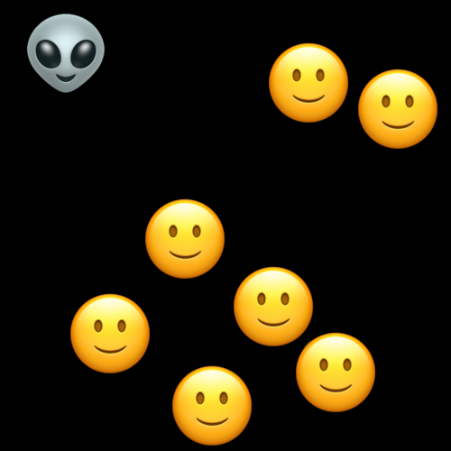
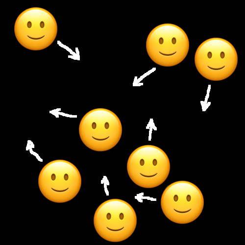
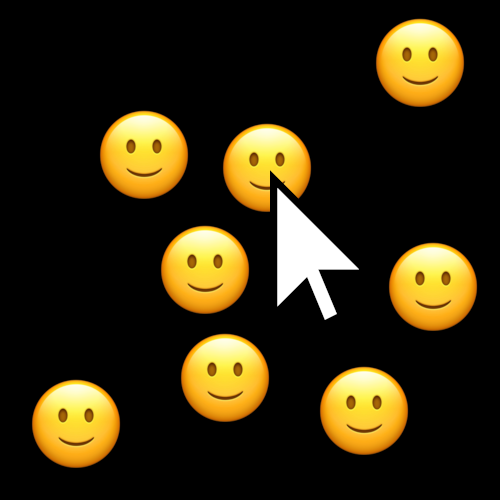
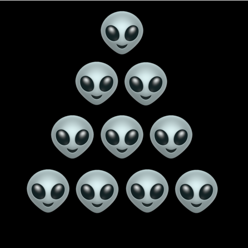
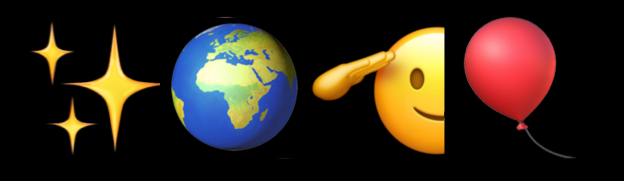

<!DOCTYPE html>
<html lang="en">
  <head>
    <meta charset="utf-8">
    <meta name="viewport" content="width=device-width, initial-scale=1.0">
    <title>Attention! UFO!</title>
        <!-- <script src="jatos.js" type='text/javascript'></script> -->
        <script src="jspsych/jspsych.js"></script>
        <script src="jspsych/plugins/jspsych-html-keyboard-response.js"></script>
        <script src="jspsych/plugins/jspsych-html-button-response.js"></script>
        <script src="jspsych/plugins/jspsych-instructions.js"></script>
        <script src="jspsych/plugins/jspsych-survey-html-form.js"></script>
        <script src="jspsych/plugins/jspsych-preload.js"></script>
        <script src="jspsych-plugin-mot.js"></script>
        <script src="tracks.js"></script>        
        <link href="jspsych/css/jspsych.css" rel="stylesheet" type="text/css"></link>
    <!-- <link rel="stylesheet" href="style.css"> -->
    <!-- <script src="script.js" type="text/javascript"></script> -->
    <style>
      p.instr { width: 80%; height: 500px; text-align: left;margin: 0 auto; }
      img.instrimg { width: 80%; margin-left: auto; margin-right: auto; display: block; }

      canvas#paper {
        
  /*width: 90vw;  */        /* 90% of the viewport width */
  /*height: 90vw;    */     /* same as width → square */
  display: block;
  margin: 0 auto;       /* center horizontally */

      }
    </style>
  </head>
  <body style="background-color: black; overflow: hidden; color: white; "><!-- page content -->
    <!-- <div style="width: 500px; height: 400px; background-color: aqua;" id="part"></div> -->
  </body>

    <script>
      var runOnServer = (typeof jatos !== 'undefined');
      var total_score = 0;
      var pixelsPerDegree = 45; // XXX24; //22;
      function shuffle(a) {
        var j, x, i;
        for (i = a.length - 1; i > 0; i -= 1) {
            j = Math.floor(Math.random() * (i + 1));
            x = a[i];
            a[i] = a[j];
            a[j] = x;
        }
        return a;
      }
      // Intro ----------------
      var preload = {
        type: "preload",
        images: ["resources/ufostory.png", "resources/mot_01.png", 
          "resources/mot_02a.png", "resources/mot_03a.png",
          "resources/mot_04.png", "resources/ufo.png",
          "resources/celebrate.png"
        ]
      }
      var instruction = {
        type: 'instructions',
        pages: [
          '<p class="instr">' + 
            'Zahrajeme si takovou hru.<br/><br/>' + 
            'Zlí mimozemšťané chtějí nenápadně obsadit naši planetu. ' +
            'Jejich pravá podoba je vidět jen chvíli' +
            '<br/><br/>' +
            '' + 
            'A tady potřebujeme tvoji pomoc.<br/><br/>' +
            `<span style="color:#888888">Hra trvá asi minutu, je ji možné hrát vícekrát</span>`+
            '</p>',
          '<p class="instr">' + 
            'Na začátku uvidíš mimozemšťany a lidi. Zapamatuj si, kteří jsou mimozemšťané! <br/><br/>' + 
            '' + 
            '</p>',            
          '<p class="instr">' + 
            'Pak se mimozemšťané pokusí schovat mezi pohybujícími se lidmi. '+ 
            'Zkus si pořád pamatovat, kteří to jsou. <br/><br/>' +
            '' + 
            '</p>',            
          '<p class="instr">' + 
            'Za chvilku se zastaví a ty označ mimozemšťany. <br/><br/>' +
            '<br/>' + 
            '</p>',            
          '<p class="instr">' + 
            'Pozor! Mimozemšťanů bude víc a víc. Zkus je odhalit všechny!<br/><br/>' +
            '' + 
            '</p>',            
          '<p class="instr">Pojďme na to.</p>',
        ],
        show_clickable_nav: true,
        show_page_number: true,
        button_label_next: "Dále", 
        button_label_previous: "Zpět", 
        page_label: "Strana",
      }
      var start_experiment = {
        type: 'instructions',
        pages: [
          '<p class="instr">Konec tréninku<br/><b>Hra začíná!</b><br/>' + 
            '</p>',
        ],
        show_clickable_nav: true,
        button_label_next: "Dále", 
        button_label_previous: "Zpět", 
        page_label: "Strana",
      }
      var short_break1 = {
        type: 'instructions',
        pages: [
          '<p class="instr"><b>Poločas</b><br/>Jde ti to skvěle! Jsi v polovině hry.<br/>' + 
            '</p>',
        ],
        show_clickable_nav: true,
        button_label_next: "Dále", 
        button_label_previous: "Zpět", 
        page_label: "Strana",
      }
      var next_trial = {
        type: 'html-button-response',
        stimulus: () =>  `Skóre: <b>${total_score}</b><br><p></p>` ,
        choices: ['>>>'],
        prompt: "<p></p>"
      };  
      var bye_trial = {
        type: 'html-button-response',
        stimulus: () => {
          var s = "";
          if (total_score > 9) {
            s = '<h1>Výborně!</h1>' +
              '';
          } else {
            s = `<h1>${total_score} z 10</h1>`;
            if (total_score < 5) {
              s += `Zkuste to ještě <a href="javascript:window.location.reload(true)">jednou</a>.`
            }
          }
          return s;
        },
        choices: [],
        trial_duration: null,
        prompt: "<p>Děkujeme za účast. " + 
          "<br>Podobné experimenty nám pomáhají pochopit, jak funguje lidská pozornost.<br><br>"+
          "<b>Pokud máte alespoň 5 bodů, ukažte tuto obrazovku u stánku Psychologického ústavu AV ČR.</b></p>"
      };

      // --- trial specs -------
      var trial_ghost_motmit = {
        type: 'mot', 
        mode: "mot",
        response_mode: "click",
        manual_stages: ["preview", "motion", "question", "feedback"], 
        track_array: tracks,
        track_index: jsPsych.timelineVariable('track_index'),
        preview_duration: 2000,
        start_time: 0,
        stop_time: 7500,
        targets: jsPsych.timelineVariable('targets'),
        object_count: 13, 

        object_matrix_image: "resources/ufo.png",
        object_matrix_size: [1, 2],
        preview_row: 1,
        motion_row: 1,
        question_row: 1,
        target_code: 1, 
        allow_unselect: false, 
        feedback_correct_index: -1, 
        feedback_incorrect_index: -1,   
        
        scale_factor: pixelsPerDegree,
        object_size: pixelsPerDegree * 1,
        background_color: "black", 
        response_cue_color: "white", 
        on_finish: function (data) {
          // console.log(data)
          var trial_score = data.score;
          // console.log(`${trial_score} plus ${total_score}`)
          total_score += trial_score;
        }
      }
      // --- timeline specs ----
      var all_objects = [0,1,2,3,4,5,6,7,8,9,10,11,12];
      var timeline_training = [
        {track_index: 2, 
          targets: jsPsych.randomization.sampleWithoutReplacement(all_objects, 1),  }, 
        {
          track_index: 3,
          targets: jsPsych.randomization.sampleWithoutReplacement(all_objects, 2),
        }, 
        {
          track_index: 4,
          targets: jsPsych.randomization.sampleWithoutReplacement(all_objects, 3),
        }, 
        {
          track_index: 5,
          targets: jsPsych.randomization.sampleWithoutReplacement(all_objects, 4),
        }, 
      ]
      var trials_training = {};
      trials_training.timeline = [ trial_ghost_motmit, next_trial ];
      // trials_training.timeline_variables = shuffle(timeline_training);
      trials_training.timeline_variables = timeline_training;

      var header = {
        runOnServer: runOnServer, 
        urlHeader: runOnServer ? jatos.urlQueryParameters : "local",
        prolificPid: runOnServer ? jatos.urlQueryParameters.PROLIFIC_PID : "local", 
        studyId: runOnServer ? jatos.urlQueryParameters.STUDY_ID : "local", 
        sessionId: runOnServer ? jatos.urlQueryParameters.SESSION_ID : "local",
      };
      var pbStep = 1 / (1 + 2 * trials_training.timeline_variables.length);
      function updateProgressBar() {
        jsPsych.setProgressBar(jsPsych.getProgressBarCompleted() + pbStep);
      }

      // start experiment
      thisTimeline = [
        instruction,
        trials_training,
        //start_experiment, 
        //trials_test, 
        bye_trial,
      ];
      if (runOnServer) {
        jatos.onLoad(function() {
          jsPsych.init({
            timeline: thisTimeline, 
            on_finish: function() {
              jsPsych.data.addProperties(header);
              var resultJson = jsPsych.data.get().json();
              jatos.submitResultData(resultJson, jatos.startNextComponent);
            },
            show_progress_bar: true,
            auto_update_progress_bar: false, 
            on_trial_finish: updateProgressBar,
            message_progress_bar: 'Postup',
          })
        });
      } else {
        // runs locally
        jsPsych.init({
          timeline: thisTimeline,
          on_finish: function() {
            var now = new Date();
            var timestamp = now.toISOString().slice(-25, -5);
            timestamp = timestamp.replaceAll(":", "-").replaceAll("T", "-");
            //jsPsych.data.displayData();
            jsPsych.data.get().localSave('json', `results-${timestamp}.txt`) 
          },
          show_progress_bar: true,
          auto_update_progress_bar: false, 
          on_trial_finish: updateProgressBar,
          message_progress_bar: 'Postup'
        })
      }

    </script>
    
</html>

